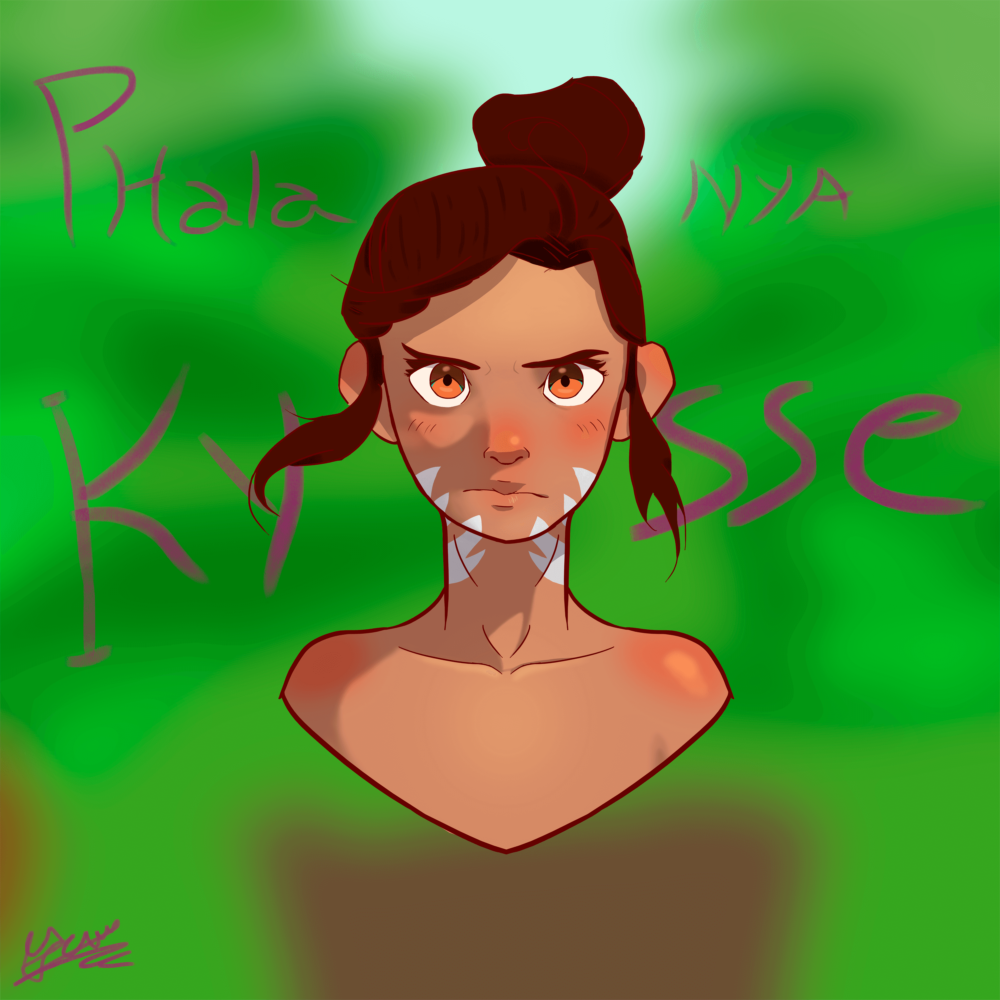

Hermanos: Respondiendo al pedido del Hermano Septerius, y siguiendo el Pacto de Diligente Observancia, he recopilado aquí las entidades con mayor enlazamiento kármico que encontré. Les recuerdo que tanto la influencia del cuerpo de Animadverte como la presencia de ambos entes extra-Spireanos dificultan enormemente el análisis, por lo que espero poder actualizar esta lista tan pronto tenga nueva información.
Shock, El Goblin Solitario
Sif Cloudwalker, El Héroe Tabaxi

Renaer Neverember, El Héroe de Waterdeep
Phalanya Kysse, La Exploradora del Bosque de Estrellas

Avril Thunderstaff, El Viento Honesto

Daemon Valgrind, El Ares
Constanza Ashrunner, El Alma Gris
Zirzaj, El Heredero Zentharim
Kat Erinniel, El Hermano del Medio
Laeral Silverhand, La Luz al Oeste
Plaudinax, Aquel que Guarda Verdades